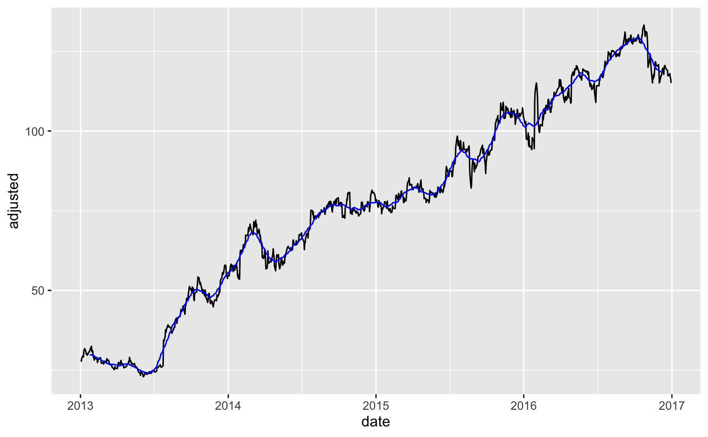
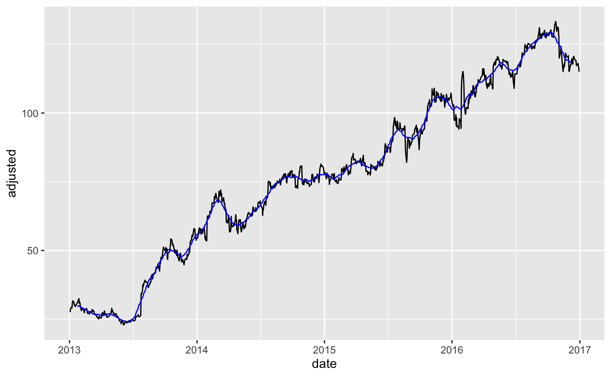

roll_apply_vec() applies a summary function to a rolling sequence of windows.
roll_apply_vec( .x, .period, .f, ..., .align = c("center", "left", "right"), .partial = FALSE )
Arguments
| .x | A vector to have a rolling window transformation applied. |
|---|---|
| .period | The number of periods to include in the local rolling window. This is effectively the "window size". |
| .f | A summary
This syntax allows you to create very compact anonymous functions. |
| ... | Additional arguments passed on to the |
| .align | Rolling functions generate
|
| .partial | Should the moving window be allowed to return partial (incomplete) windows instead of |
Value
A numeric vector
Details
The roll_apply_vec() function is a wrapper for slider::slide_vec() with parameters
made consistent with smooth_vec() and simplified center, left, right alignment.
Vector Length In == Vector Length Out NA values or .partial values
are always returned to ensure the length of the return vector
is the same length of the incoming vector. This ensures easier use with dplyr::mutate().
De-Noising Time Series with Partial Values
The advantage to using
.partialvalues vsNApadding is that the series can be filled (good for time-series de-noising operations).The downside to partial values is that the partials can become less stable at the regions where incomplete windows are used.
If instability is not desirable for de-noising operations, a suitable alternative
is smooth_vec(), which implements local polynomial regression.
See also
Loess Modeling:
smooth_vec()Rolling Window Calculations:
slider::slide_vec(),zoo::rollapply()
Examples
#>#> #>#> #> #>#>#>#>#> #>#> #> #>#> #>#> #> #>#> #>#> #> #>#>#>#> #> #>#>#>library(timetk) # Training Data FB_tbl <- FANG %>% filter(symbol == "FB") %>% select(symbol, date, adjusted) # ---- FUNCTION FORMAT ---- # - The `.f = mean` function is used. Argument `na.rm = TRUE` is passed as ... FB_tbl %>% mutate(adjusted_30_ma = roll_apply_vec( .x = adjusted, .period = 30, .f = mean, na.rm = TRUE, .align = "center")) %>% ggplot(aes(date, adjusted)) + geom_line() + geom_line(aes(y = adjusted_30_ma), color = "blue")#> Warning: Removed 30 row(s) containing missing values (geom_path).# ---- FORMULA FORMAT ---- # - Anonymous function `.f = ~ mean(., na.rm = TRUE)` is used FB_tbl %>% mutate(adjusted_30_ma = roll_apply_vec( .x = adjusted, .period = 30, .f = ~ mean(., na.rm = TRUE), .align = "center")) %>% ggplot(aes(date, adjusted)) + geom_line() + geom_line(aes(y = adjusted_30_ma), color = "blue")#> Warning: Removed 30 row(s) containing missing values (geom_path).# ---- PARTIAL VALUES ---- # - set `.partial = TRUE` FB_tbl %>% mutate(adjusted_30_ma = roll_apply_vec( .x = adjusted, .period = 30, .f = ~ mean(., na.rm = TRUE), .align = "center", .partial = TRUE)) %>% ggplot(aes(date, adjusted)) + geom_line() + geom_line(aes(y = adjusted_30_ma), color = "blue")# ---- Loess vs Moving Average ---- # - Loess: Using `.degree = 0` to make less flexible. Comperable to a moving average. FB_tbl %>% mutate( adjusted_loess_30 = smooth_vec(adjusted, .period = 30, .degree = 0), adjusted_ma_30 = roll_apply_vec(adjusted, .period = 30, .f = AVERAGE, .partial = TRUE) ) %>% ggplot(aes(date, adjusted)) + geom_line() + geom_line(aes(y = adjusted_loess_30), color = "red") + geom_line(aes(y = adjusted_ma_30), color = "blue") + labs(title = "Loess vs Moving Average")